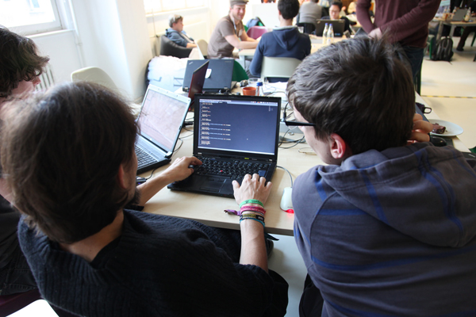

Code for Germany
“I want to work in public service to make the world a little bit more transparent, to encourage citizens to work together with government, and to get citizens more involved in democratic processes and our daily life.”
Building and Enabling the Civic Technology Community in Germany

In the spirit of furthering transparency and openness, pillars central to the organization’s work, the Open Knowledge Foundation’s Berlin chapter started a “Code for Germany” program. The Code for Germany team began with plans to implement a CfA-inspired fellowship program. The German government’s inflexible procurement policies, however, made it difficult for governments to pay for fellows. Inspired by CfA’s Brigade program (a citizen volunteer program with multiple chapters forming an international network), the German team created a national network of citizen volunteer chapters who work with their local governments to leverage technology to improve the places where they live. By training “Lab Leads” from all over Germany jointly with CfA staff on themes ranging from “How to Collaborate with Government” to “How to Host a Hack Night” the Code for Germany team activated a national network of people committed to community organizing in their cities and to working with their local governments to use technology as the vehicle for positive social change throughout the country.
There are now twelve Open Knowledge “Labs,” local chapters of motivated residents who want to make a difference in their communities, working on projects throughout Germany. The Code for Germany team receives more interest from citizens interested in setting up labs in cities throughout Germany than they can manage.
Code for Germany’s OK Labs work closely with their government partners to:
one
Help the police better allocate resources by mapping incidences of crime in Heilbronn *photo of crime map*
two
Strengthen the democratic process in Münster by developing a digital interface to the city council that provides an overview of current legislation and city council activity *photo of interface*
three
Democratizing the way public land is developed in Berlin by creating 3d visualizations that help residents better understand the implications of urban development projects and equip them to influence the process in an informed and effective manner *representation of visualization*
four
Inform residents in Ulm of free childcare options near them using a digital nursery school-finder *photo of map of free childcare centers*